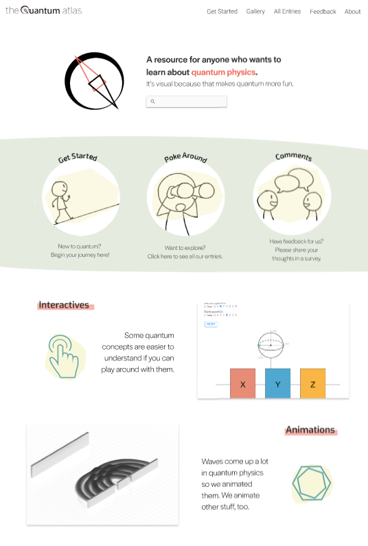
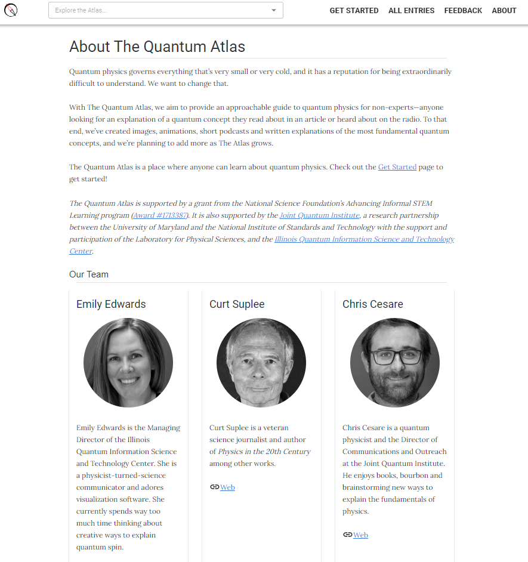
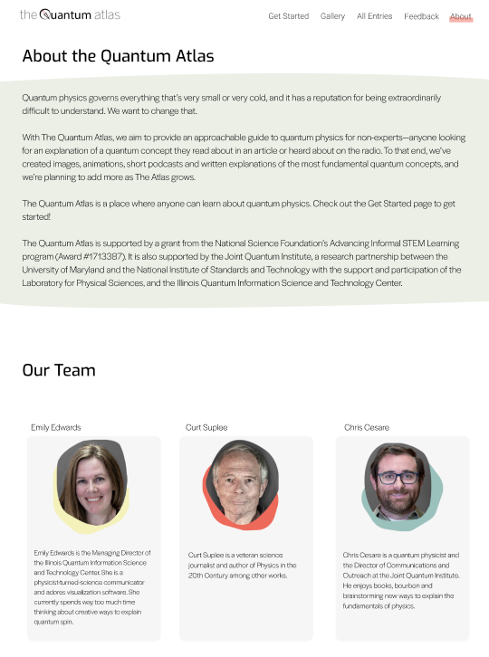
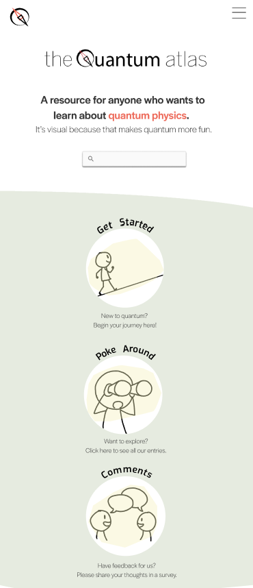
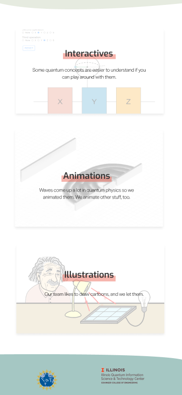

The Quantum Atlas
The Joint Quantum Institute (JQI) is discovering properties of quantum physics as they become relevant in information science and technology.
The Quantum Atlas is an approachable guide to quantum physics intended for non-experts. Its purpose is to enhance learning in informal environments, and broaden access and engagement in STEM learning experiences, featuring cartoons, animations, interactive elements and infographics.
I am currently working on redesigning their website, as well as creating content (animations, infographics) to supplement the entries.
Role
- User Interface
- User Experience
- Graphic Design
Skills
- Figma
- Adobe Illustrator
- Adobe Photoshop
- Adobe After Effects

Before and after of our home page on Figma. Although we liked the first design when it was made, the team felt it was missing something. We wanted our audience to feel invited and excited to learn about quantum physics.


I included some of the "fun" aspects we have on our site, like interactives and illustrations to contribute to a non-intimidating experience, as well as showcase the unique qualities that our site has compared to scientific sources. The color palette I chose was lighter and brighter than our last design, something I thought was necessary for the experience we wanted our audience to feel. I also played with transparancies and added color through backs splashes and highlights.


Before and after of the about page. Played with more colors and shapes.


Mobile version of site.
I created numerous graphics and animations like this one on qubits. We first conducted initial needs assessments (via focus groups) to find out what our primary users know about quantum physics and what mediums they want to learn in. We then used this data to guide the development of our content.


Some static infograpics I made.